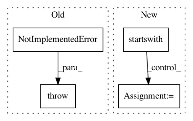

1780833b30d953509200bf9560be2ba42fabe9ff,tensorboard/plugins/debugger_v2/debug_data_provider.py,LocalDebuggerV2DataProvider,read_blob_sequences,#LocalDebuggerV2DataProvider#Any#Any#Any#Any#,95
Before Change
):
del experiment_id, plugin_name, downsample, run_tag_filter // Unused.
// TODO(cais): Implement this.
raise NotImplementedError()
def read_blob(self, blob_key):
del blob_key // Unused currently.
// TODO(cais): Implement this.
After Change
continue
output[run] = dict()
for tag in run_tag_filter.tags:
if tag.startswith(EXECUTION_DIGESTS_BLOB_TAG_PREFIX):
output[run][tag] = [
provider.BlobReference(blob_key="%s.%s" % (tag, run))
]
return output
def read_blob(self, blob_key):
if blob_key.startswith(EXECUTION_DIGESTS_BLOB_TAG_PREFIX):
In pattern: SUPERPATTERN
Frequency: 3
Non-data size: 4
Instances
Project Name: tensorflow/tensorboard
Commit Name: 1780833b30d953509200bf9560be2ba42fabe9ff
Time: 2020-01-06
Author: cais@google.com
File Name: tensorboard/plugins/debugger_v2/debug_data_provider.py
Class Name: LocalDebuggerV2DataProvider
Method Name: read_blob_sequences
Project Name: tensorflow/tensorboard
Commit Name: 1780833b30d953509200bf9560be2ba42fabe9ff
Time: 2020-01-06
Author: cais@google.com
File Name: tensorboard/plugins/debugger_v2/debug_data_provider.py
Class Name: LocalDebuggerV2DataProvider
Method Name: read_blob
Project Name: rwth-i6/returnn
Commit Name: 10ee888f8aa6ae6a2f7a94b61c8920e199b3f9ad
Time: 2020-08-21
Author: albert.zeyer@rwth-aachen.de
File Name: returnn/tf/layers/base.py
Class Name: LazyLayerResolver
Method Name: create_dummy_layer